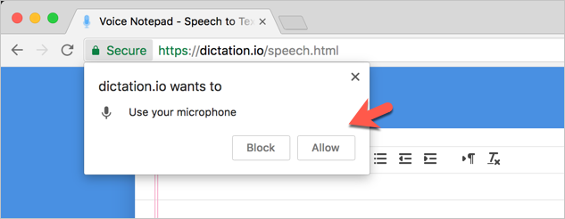
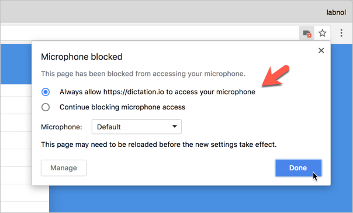

Dictation — Frequently Asked Questions
Dictation lets you type with your voice in any language. When you speak into the microphone, your speech is converted into text in real-time, ready for revision and editing.
What are the system requirements?
Dictation uses Google's powerful Speech Recognition engine to transcribe your voice into text and the results are extremely fast. You need Google Chrome browser on your Windows PC, Mac OS X or Linux. Dictation work inside Chrome on Android too but we recommend desktop browser for improved productivity. It is not compatible with iPhone or iPad.
Does Dictation support my native language?
Dictation can understand spoken words in all popular languages including English, Español, Français, Italiano, Português, हिन्दी, தமிழ், اُردُو, বাংলা, ગુજરાતી, ಕನ್ನಡ, and more. See full list of supported languages
Speech to text software for people with Special Needs
Assistive technology using speech recognition is known to benefit students with special needs and learning disabilities that interfere with their ability to spell and write. It makes writing easier for people who suffer from carpal tunnel syndrome or repetitive strain injury (RSI) in the hands or wrists.
How do I improve the accuracy of speech recognition?
Speech recognition works best in quiet settings so if you in a complex enviroment, like a noisy coffee shop, the engine may not accurately recognize your voice.
The built-in microphone should be good enough but if you can invest in a dedicated headset, it would significantly improve the recognition accuracy. Dictate using longer phrases in natural voice rather than short phrases or individual words. You should pause briefly before and after you dictate punctuation.Can I publish my notes on the Internet, like a blog?
Dictation, by default, saves everything in your browser and no data is saved online. However, you can click the 'Publish' button to publish your text to the Internet that anyone can access.
The online note is published on Gist from Github with a secret URL that can only be accessed by people who know the URL.
Dictation is not working for me. What could be wrong?
Please ensure that you are inside Google Chrome, your microphone is turned on and that your computer is connected to the Internet. You should also close any other window or browser tab that uses Speech Recognition in your browser at the same time. If any browser tab shows a blinking red dot, it indicating that it is listening to your speech and you cannot have multiple tabs using Speech Recognition at the same time.
Also, the first time you open dictation, it would ask for permission to access your microphone so make sure you click "Allow".
How do I unblock my microphone to use Dictation again?
While you are on the dication website, go to the address bar and click the camera icon in the upper right corner. Here check the first option that says "Always allow https://dictation.io to access your microphone". Click Done and reload the page. Alternative, type chrome://settings/content/microphone in the Chrome address bar and remove dictation.io from the Blocked list.
What is your privacy policy? Is my data safe?
Dictation stores everything in your browser locally and not a byte of your data is transmitted or stored anywhere. It only sends the speech to Google servers via Chrome over HTTPS (secure) for speech recognition and outputs the transcribed text in your browser. You can read our privacy policy.
Can speech recognition work offline?
No. Dictation relies on the Google speech recognition engine that transcribes your speech to text in the cloud.
How do I get in touch with the developer?
Dictation was developed by Amit Agarwal, Google Developer Expert and founder of Digital Inspiration. You can send him an email at amit@labnol.org or tweet @labnol.
Can you help?
We are looking for native speakers in বাংলা, తెలుగు, मराठी, தமிழ், ગુજરાતી, ಕನ್ನಡ, اُردُو ,മലയാളം, ਪੰਜਾਬੀ, עברית to help us expand the list of punctuation marks and voice commands in these languages.
Please get in touch or email amit@labnol.org.
Contact Us